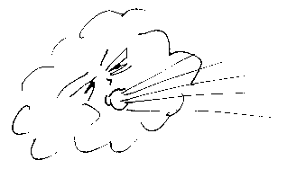

À Portinfé,
Saint Ou.
Moussieu l'Editeu,
Je n'crais pas que j'peux mûs qu'menchi agniet que d'vos dithe tchèsqu'i' nos arrivit dans la grande tempête de lundi et mardi. Quand j'nos en fûmes nos couochi lundi au sé, après un bouon soupé, i' ventait pûs qu'un mio, mais j'nos endormîmes sans autchune peine. J'tais justement à rêver que Jèrri avait 'té attatchi par les Allemands avec des gros canons, quand la Merrienne me rêvillyit avec deus-trais bouons co-d'pids dans la héthèque du dos. “Oh Ph'lip!” ou s'êcriyit, “ch'est la fin du monde. Rêvillye té, et j'nos mettrons à g'nors ensemblye pour dithe nos priéthes”. Ocquo à maintchi endormi, j'li d'mandis s'oulle avait perdu la tête.

“Nennin, man Ph'lip,” ou raiponnit, “mais nou n'peut pas s'y tromper. I' nos est dit qu'au dernié jour y'étha une terriblye tempête et un tremblyement d'têrre. J'n'ai jamais ouï l'vent d'la forche tch'il est, et quant au tremblyement, la maison châque comme s'oulle allait tchais à toute minute. D'valle du liet tout d'suite, mais donne-mé l'temps d'changi ma qu'minsôle car je n'voudrais par m'en aller au Paradis sans être habillyie dans man tout miyeu”.
“Bon!” j'li dis. “Dans l'entretemps j'm'en vais d'valler pour me faithe seux que les portes et les f'nêtres sont ocquo là.” Et j'm'en fus à bas, ayant print la précaution d'mettre mes braies, après aver allumé une chandelle. Bein seux, Moussieu, ch'n'tait pas une tempête, ch'tait un ouragan, et si notre vielle maison n'avait pas 'té solidement bâtie et un mio à l'abri, j'n'doute pas qu'oulle éthait êcroulé. Quand i' fit jour, j'décidis d'aller d'hors pour vaie si y'avait yeu du d'gat et la preumié chose que j'vis ch'tait que notre poulâillyi avait 'té transporté du bel jusque dans l'gardin, drait dans l'mitan d'ma bordeuse. La volaille avait dispathu et j'n'avons pas r'veu une seule d'nos poules – ch'n'est pas grosse perte! Dans la route y'avait un gros orme tch'avait tchais à travers et rein n'put pâsser d'vant l'arlévée, quand par les ordres du Connêtablye, lé bouais avait 'té scié et enlevé par les hommes des routes. A ch'teu que l'vent a diminué, tout va bein et par siez-nous les gens sont à plianter en plein clios.
Pûs tard j'eus la chance d'aller faithe une p'tite touônée dans la pâraisse avec une charmante dame tch'offrit de m'prendre dans san auto. Ou m'print dé iou qu'nou-s-avait une parfaite veue du nouvieau réservoir, tchi contchient, à ch'que nou dis, deux millions gallons d'ieau. Je réfléchis que si la grande muthaille tchi contchient chutte mâsse d'ieau allait tchaie yun d'chais bieaux jours, i' n'restéthait pas grand'chose d'la p'tite chapelle d'Béthesda, tchi pathait si bein à ch'teu qu'oulle a 'té r'peinte. En pâssant la belle maison à man vièr amin, lé Jack A'court, i' 'taient à plianter et je n'voulis pas entré. J'en avais r'gret, car y'a d's années que j'nos entreconnaissons, épis, si l'Jack ne touche prèsque à rein, y'a tréjous tout plien dans l'armouaithe pour ses amins. I' faut que j'vos diche étout que d'vant arriver là j'avais veu l'site ès Landes ouèsque nou-s-espèthe que y'étha des courses d'vant long. J'mé r'souveins des vièrs jours des courses là, quand un homme tchi r'venait siez-li sobre était si rare que s'i' s'en trouvait yun, sa femme voulait envier pour lé docteu.
A ch'teu, Moussieu, tchèsqu'i' s'pâsse dans nos Etats? Je d'mande car je n'peux pas comprendre pourtchi que l'projet présenté par l'Comité d'la Santé Publique l'autre jour n'fut pas accepté. Bein seux, tchiques amendements 'taient nécessaithes mais lé président, un autre de mes vièrs amins, asseuthi la Chambre que nou les f'thait et tout ch'qu'i' d'mandait, séance ténante, ch'tait l'adoption du préambule. A ch'teu, chais maisons dans la Ville tchi prennent jusqu'a chinq étrangiers à trente ch'lins la s'maine pour lûs liet seulement, sont libre d'continuer chu traffic-là, et à ma veue ch'est une vraie honte. Nou dit au comité que y'avait dêjà assez d'inspection, mais chein que j'voudrais saver, et y'en a hardi comme mé ch'est ouesqu'oulle est, et tchèsque est responsablye? La Merrienne étout considèthe que l'êtat d'choses constitute une disgrâce, mais oulle ajouôte que d'nos jours nou n'peut pas s'fier que l's Etats ne f'thont pas des folies, et oulle a raison.
Mais, Moussieu, j'peux aller pûs lien, car j'peux vaie l'temps quand j'n'éthions pas besoin d'nos Etats du tout. Il est évident que, dé pûs en pûs, lé Comité de Tourisme gouverne à bein près tout ch'qui s'pâsse. Tout ch'qu'i' propose est accepté sans tchestchion, et tout ch'qui n'lûs pliait pas est envié au royaume des taupes. Bétôt si n'y a pas un grand changement touos les Sénateurs, les Connêtablyes et les Députés tchi n'sont pas sûs l'comité pouôrront rester siez-yeux, car dans la Chambre i' n'y étha rein pour yeux à faithe. Tout dépend du Comité du Tourisme et tout ch'que nou peut espéther ch'est que rein n'arrivtha pour interrompe lûs programme. Sûs chu point-là, Moussieu, j'si ocquo yun de chais tétes-duthes tchi n'aiment pas chais grands chagements. Ch'est la preumié fais qu'autchun comité a 'té donné tant d'pouvé, et quand nou pense ès choses tchi pouorraient donné une sale tappe au tourisme, nou-s-en tremblye. Jusqu'à ch'teu, i' nos est v'nu des visteurs en mâsse mais tchèsqu'i' peut granti que chonna continuétha? Pas mé, pas vous, Moussieu, pas même lé comité
A ch'teu, pour la saison. J'vos surprendrais, Moussieu, si j'vos disais combein d'fermiers que j'ai rencontré derniéthement voudraient que l'vièr système du “Weighbridge” pouôrrait r'vénin. J'n'ai pas besoin d'vos dithe que j'si de ch't'opinion-là étout, mais ch'est inutile d'y penser pour ch't'année, ou même pour l'av'nin. Quant à mé, si j'peux faithe assez sûs man p'tit bétchet pour mé donner tchiquechose en pouchette après aver rasseuthé l'gérant d'ma banque, je f'thais bein. Il est vrai que ch'est lé Bram, l'grand d'mes fils, tch'a fourni la pliante et l'gouaino, et tch'a fait l'travas tout pour rein, mais, comme j'l'ai dit pûs d'une fais, pourtchi produithe un fils s'i' n'veint pas à votre aide quand nou-s-est vièrs?
Ph'lip
Viyiz étout: